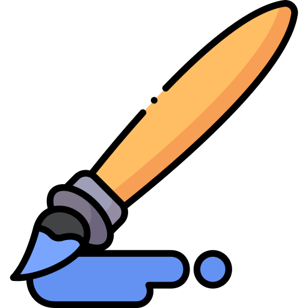

05/11/21
Tipos de Perros

El arte es muy importante para la vida de las personas ayuda a expresar las emociones.
Para aprender a dibujar personas lo primero que tenemos que hacer es aprender a dividir las cosas en figuras geometricas, despues de eso, debemos aprender algo de anatomia de diferentes animales empezando por los huesos, siguiendo por los musculos y acabando con la carne, no olvides usar plataformas como pinterest para apoyarte. Despues de eso empieza a descomponer la anatomia humana para poder dibujar en el estilo que te acomode como por ejemplo hacer el cuerpo desproporcional a la cabeza.

 Tipos de Perros
Tipos de Perros.jpg)